Personal
Training Lab
A private training app. I built it to turn my Garmin data into a plan I actually follow.
Sign-in is my Google account only. There is no public demo and no public repo. The numbers in the shots are made up.
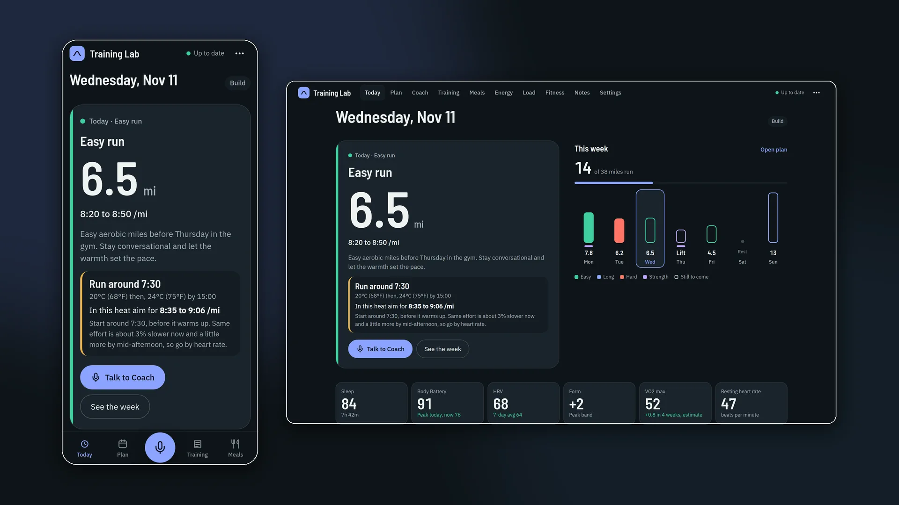
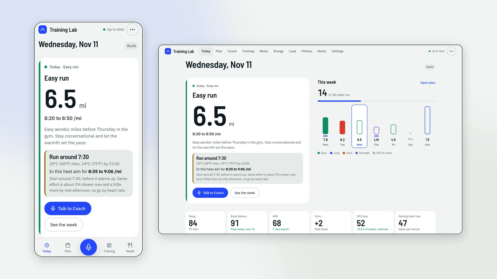
On the phone
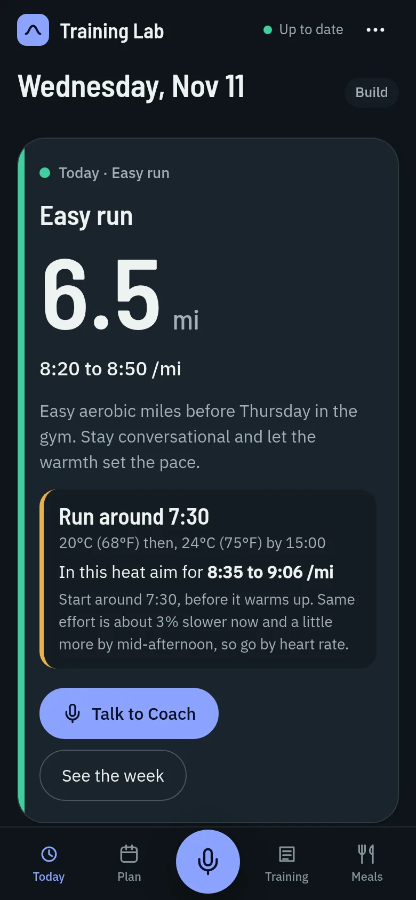
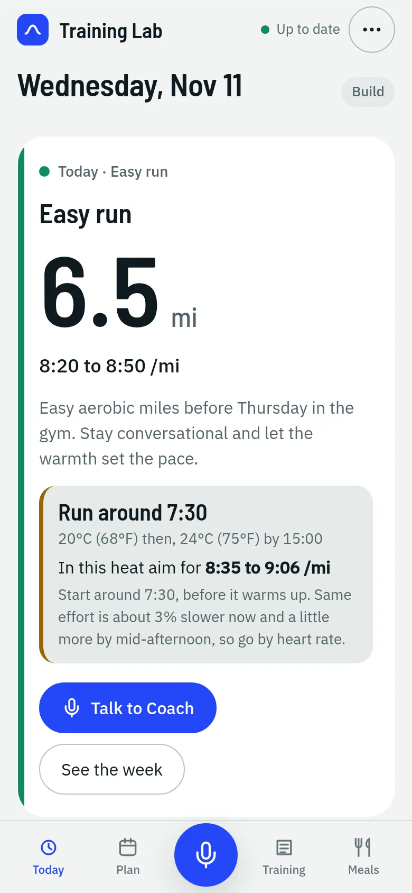
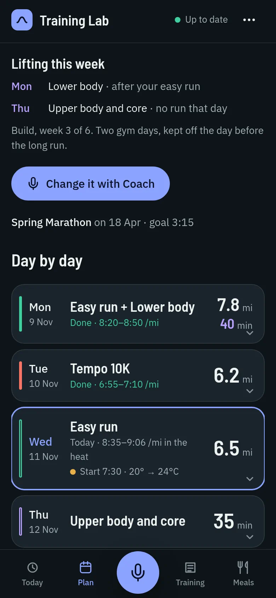
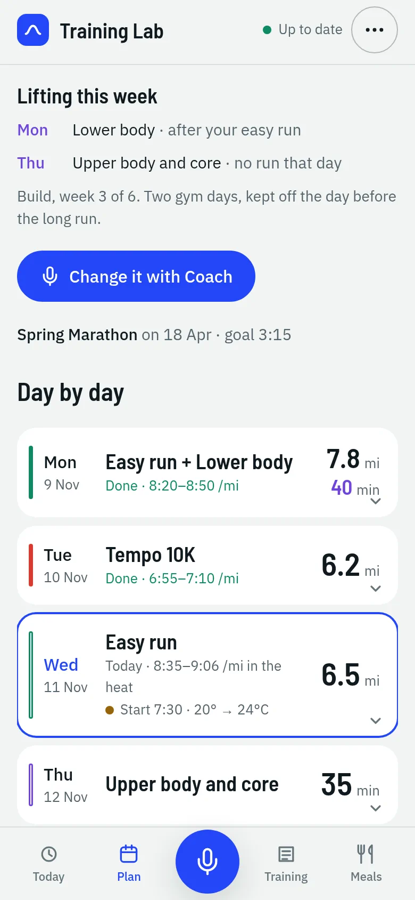
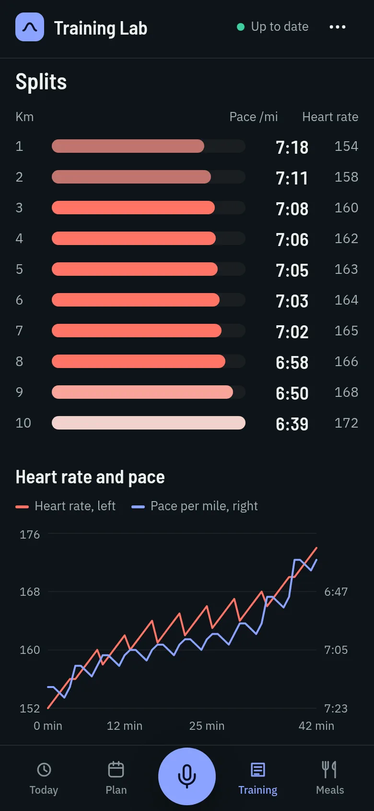
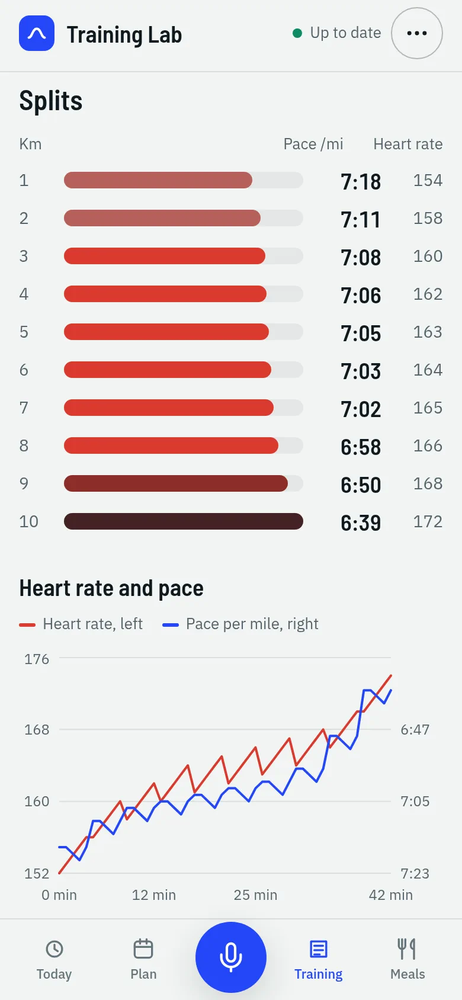
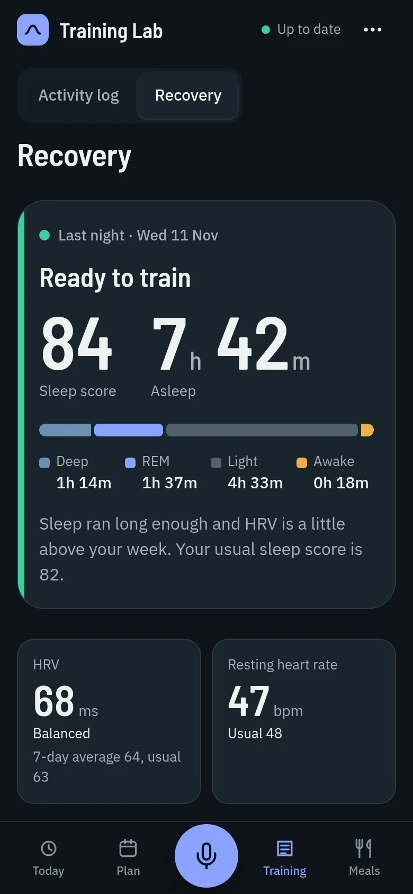
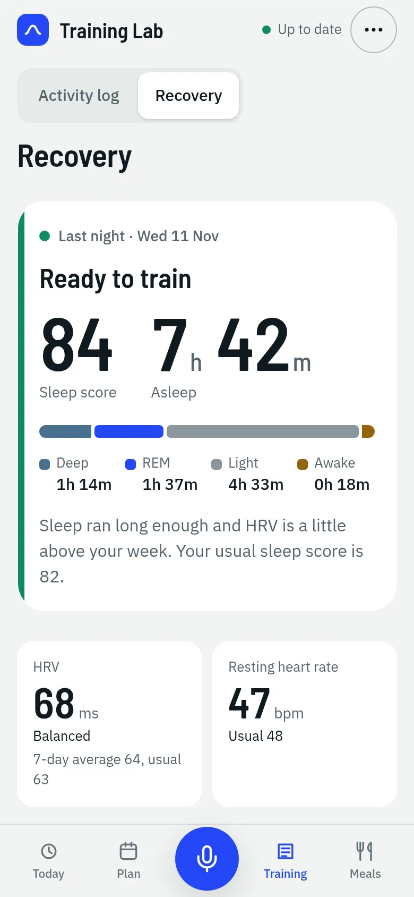
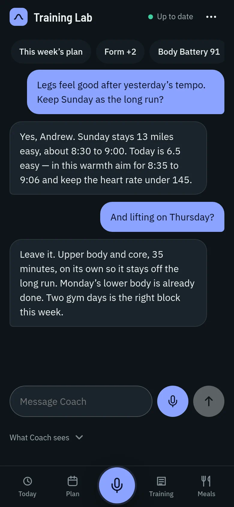
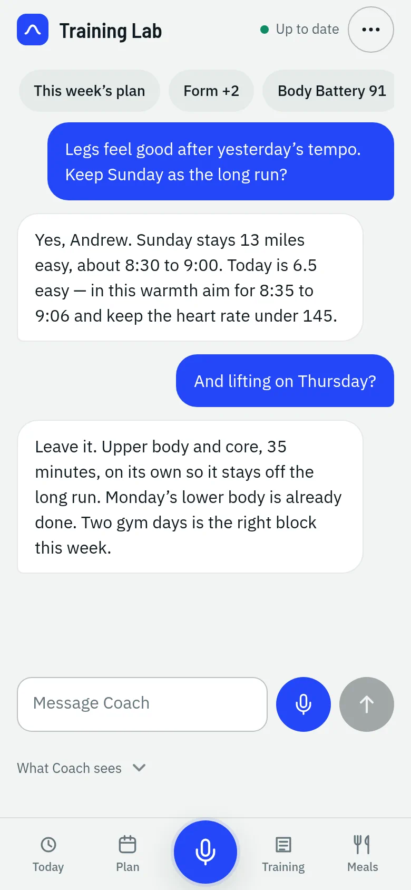
On the desktop
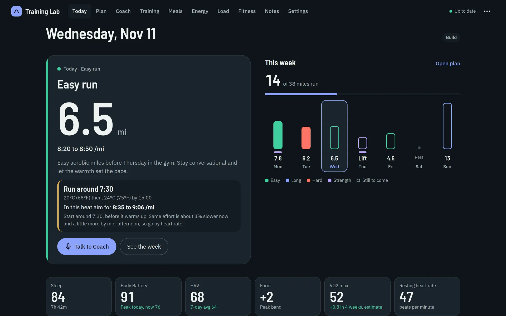
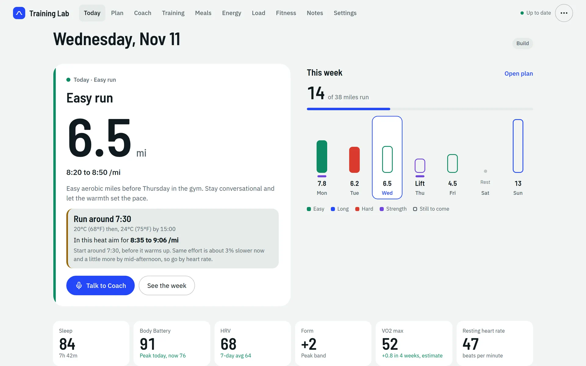
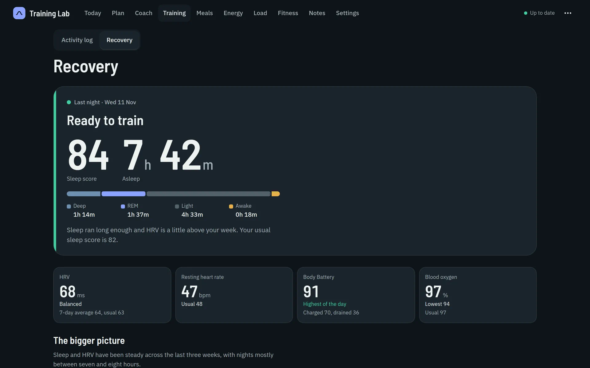
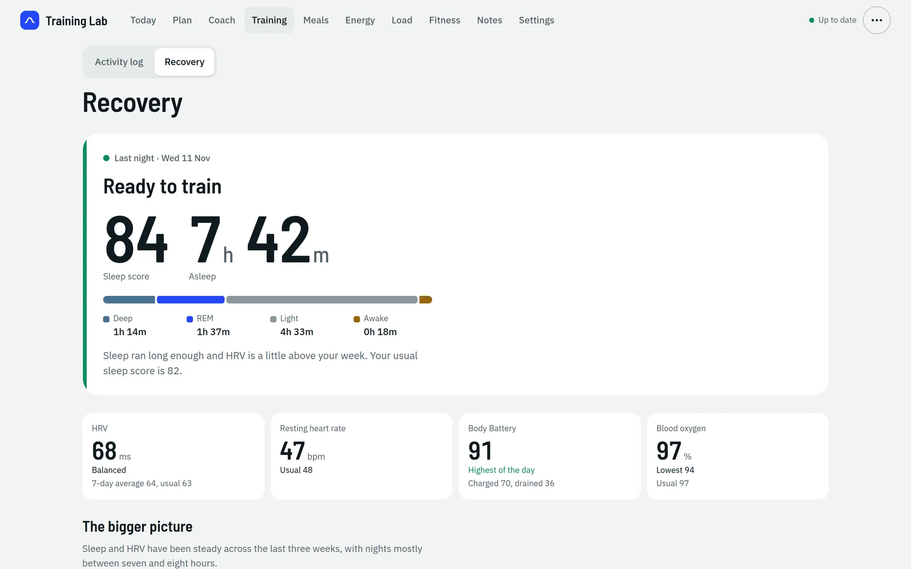
A meal, before it counts
A photo goes in. An estimate comes back, with a calorie range and macros. Nothing is logged until I review the grouping, the time, and the portions.
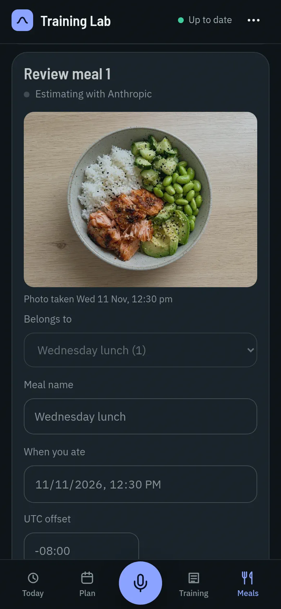
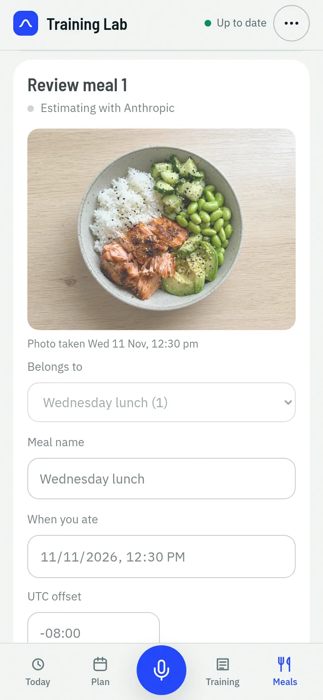
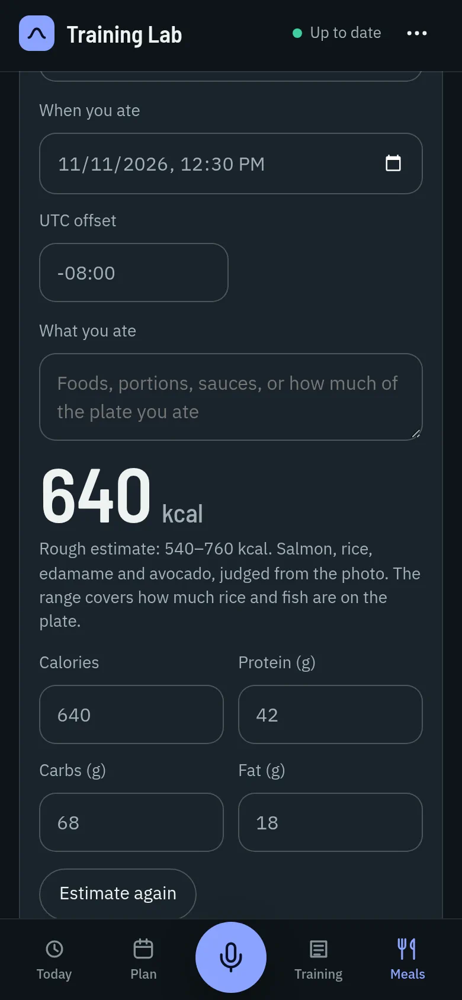
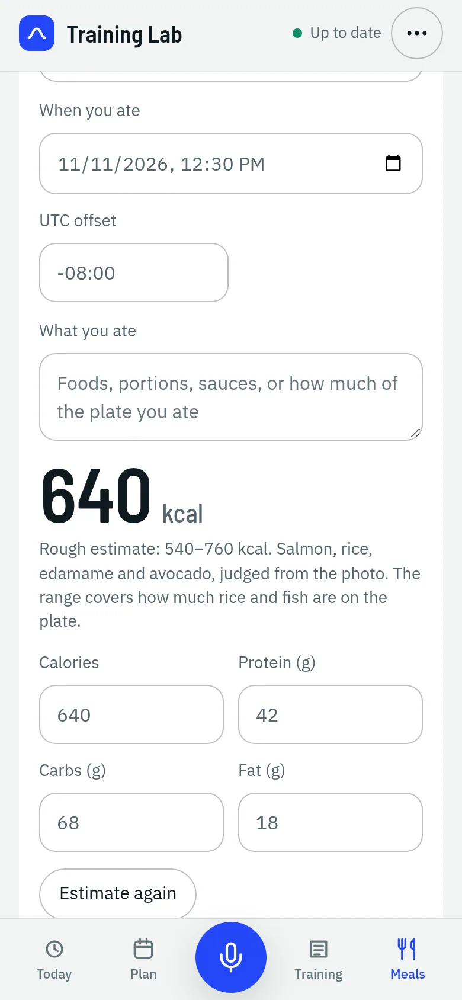
How it works
The phone app is a static site. The interesting part is what happens after a request leaves it.
Stored rows are owned by the signed-in user id, not by a header the browser can invent. A failed auth check does not fall back to sample data. The process keeps one in-memory copy of the Garmin history for a few minutes, so two screens do not each re-read the whole log. Profiles and Coach conversations are their own per-user documents.
Garmin sync
The server exchanges its API key for a bearer token, treats a raw JWT body as that token, and reuses it until it is inside an hour of expiry. Keys and tokens are not written to logs.
Finished chunks are checkpointed, so a rate limit, a budget stop, or a deadline does not throw away work already stored. Activity pages are walked until a short page. Sleep, daily wellness, and HRV then come in 28-day chunks, newest first. Body battery, hydration, blood oxygen, and fitness age are optional. Detail reads (route, effort, samples) stop at six of the newest activities that still lack them. Split and lap endpoints are not called. On this connection they 404.
What it will not invent
Nested Garmin objects are flattened on the way in. Activity summary fields live under a summary object, sleep scores under a scores object, and body-battery days arrive as a report list. The mapper keeps a stable shape and drops empty values.
Some fields in Garmin's wider schema never arrive on this connection, and the app does not pretend they did. Sleep has an overall score, not a recovery or quality score. The load on the charts is the app's own fitness and fatigue model, even when a Garmin load series is stored. Per-kilometer splits and lap reps are not in the activity list. VO2 max and race predictions are optional and often missing. When they are missing, the screen says the number is an estimate.
Voice coach
A voice note is recorded in the browser. Tap the mic, talk, tap send. The audio is uploaded once and is not saved. The server holds the bytes for that request, sends them to Gemini Flash with a transcribe-only instruction, and discards the audio. Only the transcript comes back. I see that text and can send it on.
Coach is a separate private service. The API posts the question plus a structured last 14 days, not a dump of notes: distances, durations, load, sleep, wellness, VO2, one set of race predictions, the primary race date and goal, plan preferences with the free-text note removed, a short weather outlook, and reviewed meal numbers. Activity names, notes, and race names stay out. The saved conversation is what the app reloads. A proposed week is not written to the plan until I accept it.
Meal photos
Choosing a photo prepares it on the device: resize, flatten, strip metadata. The copy goes to private storage. Up to three photos of a suggested meal, plus a caption if I add one, go out for an estimate. The server re-encodes a bounded JPEG with no metadata and sends it to the same private coach.
The reply is a checked shape: calories, a low-to-high range, protein, carbs, fat, and a short explanation. Nothing is written to the log until I edit the numbers if I need to and tick that I reviewed the grouping, the time, and the portions. Only those reviewed numbers from the last 14 days are later shown to Coach, as numbers only, not captions or photo ids. A failed estimate leaves the draft and does not invent a number.
VO2 max
Garmin often does not share VO2 max on this connection, so the app estimates one. For a steady run it takes the oxygen cost of the pace from the Daniels-Gilbert running-economy curve, heat-adjusts the pace when the run has matched weather, and divides by heart-rate reserve (average heart rate against resting and max).
The number shown is the median of usable runs in the last four weeks, and only after at least three runs that are long enough. It is labelled as the app's estimate, not Garmin's. Race times from it use the same model.
Splits
Each kilometer is interpolated from the activity samples: cumulative distance and moving time, plus heart rate and elevation when the sample has them. A leftover piece is kept when it is at least 100 meters.
Older runs that only have a thinned pace trace get an estimated split, scaled so the pieces add up to the recorded distance. Those are marked as estimates, because a stop or a gap can move a kilometer by a few seconds.
Readiness
There is no recovery score on this sleep feed. Each day is read from Body Battery peak (76 or higher is good, 50 or lower is low), sleep score (80 or higher is good, under 60 is low), and last night's HRV against its 7-day average (within 3 percent or above is good, more than 10 percent below is low).
A day is low only when two of those signals are low, and good when none are low and two are good. The week eases off when at least three of the last seven days read low and at least four days have a reading. Empty days are not treated as low.
Heat-adjusted pace
Above 15 degrees C, pace is estimated about 0.6 percent slower per degree. Dew point above 16 degrees C adds about 0.3 percent per degree. The same rule takes heat out of a recorded run and shows a slower target for the same effort on the forecast. The forecast picks a start hour in the window and shows how much hotter the day gets later.
Lifting blocks
Two gym sessions a week is the normal week: a lower-body day, then a single-leg, upper-body, and core day. An optional third is short and light. With a race on the calendar, the four-week block is counted backward from that date so the heavier week lands just before the taper, and the easier weeks fall every four weeks before that. The last two to three weeks are a taper, with fewer sets and lighter work. Race week, the week after, and the last few days before the race drop to one light session or none. With no race, the block follows a fixed Monday calendar so a rebuild does not shuffle the week.
Lifting is never placed on a rest day, the long-run day, the day before a long or hard run, or two days in a row. The app does not know my weights. Each lift is prescribed by effort.
Tests
299 backend tests across 31 files, and 176 frontend tests across 22 files. The backend set covers sync and resume, mapping, the fields Garmin does not send, VO2, splits, readiness, heat, strength placement, meals, media, Coach context, auth, and the gateway template. The frontend set covers auth, the snapshot cache, meal photos, the Coach message flow, strength planning, theme, and weather backfill.